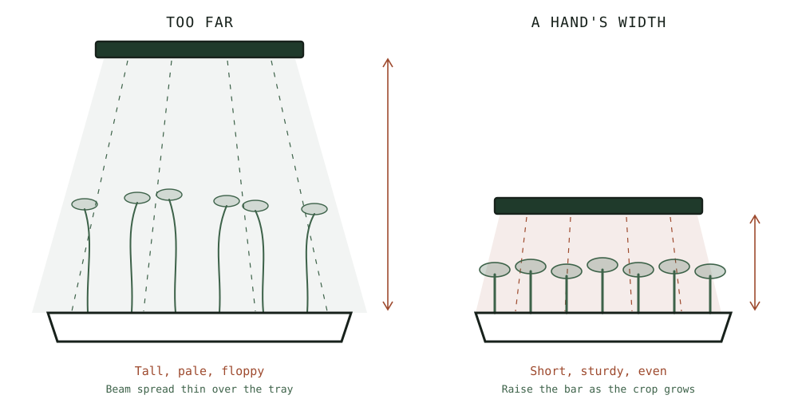

Guide
Grow Lights for a Windowsill Run
Light is the variable that decides whether microgreens work indoors, and most windowsills that feel bright are not.
As an Amazon Associate this site earns from qualifying purchases. Links to products may be affiliate links. This costs you nothing extra and does not change what gets recommended. Nothing here is medical advice.
Grow Lights for a Windowsill Run
Sprouts need no light at all. Microgreens need a great deal, and the gap between those two facts is where most indoor growing goes wrong.
A microgreen that does not get enough light stretches. The stem elongates and thins as the plant searches for a stronger source, the colour pales, and the whole tray eventually flops sideways under its own weight. The plant is behaving correctly. There is simply not enough energy arriving.
No adjustment to watering, medium, seed, or timing will compensate. Light is the constraint, and this page is about solving it cheaply.

What a windowsill actually delivers
Human eyes are extraordinary at adapting to different light levels, which makes them terrible instruments for judging whether a plant has enough. A room that feels bright to you may be delivering a small fraction of what an outdoor plant receives.
Several factors compound. Glass reflects and absorbs a meaningful share of incoming light. Distance from the window matters enormously, since light falls off sharply with distance. Orientation decides how many hours of direct sun the sill receives, and in winter at higher latitudes a north facing window in the northern hemisphere delivers almost nothing usable.
Some windowsills genuinely work. A south facing sill in summer, with the tray pressed against the glass, will grow radish and peas perfectly well. The problem is that the same sill in December will not, and most people discover this after the crop has already stretched.
The honest test is empirical rather than theoretical. Grow one tray of radish on your sill. If the stems come up short, sturdy, and evenly coloured, your light is adequate for that species at that time of year. If they stretch and pale within two days of uncovering, it is not, and no other variable is worth adjusting until you fix it.
What microgreens actually need
Two things matter, and neither requires expensive equipment.
Intensity, at close range. Microgreens are small and they are harvested young. They do not need the output required to fruit a tomato. They need a reasonably bright source positioned close to the canopy, and closeness does more work than raw power. Moving a light from sixty centimetres to fifteen makes a far larger difference than doubling its wattage at the greater distance.
Duration. Twelve to sixteen hours daily is the range most growers settle on. Below twelve, growth slows noticeably. Above sixteen, the returns fall away and you are paying for electricity that produces very little. Plants also use their dark period, and running lights continuously is neither necessary nor better.
A cheap mechanical or plug in timer removes this variable entirely and costs very little. Trying to remember to switch a light on and off twice a day is the same category of failure as trying to remember to rinse a jar.
The light itself
LED bars. A linear bar mounted a hand's width above the tray is the standard answer and deservedly so. They are inexpensive, they run cool enough to sit close without scorching, they use little power, and a single bar covers a standard tray comfortably. Look for something with a diffused output rather than a few intense point sources, which produce hot spots and shadowed corners.
Clip on lights. The gooseneck style clip lamps sold for houseplants work for a single small tray and are convenient for a shelf with no mounting options. Coverage is the limitation. They tend to light a circle rather than a rectangle, so a tray under one will grow unevenly, with the corners stretching while the centre does not.
Panels. Larger flat panels cover multiple trays and suit anyone running a rotation. They cost more, they need somewhere to hang from, and they are overkill for a single tray.
Ordinary LED shop lights. These work far better than their price suggests. A basic white LED batten from a hardware shop, hung close, will grow microgreens perfectly well. The specialist horticultural marketing is not doing much for a crop harvested at ten days.
The colour of the light matters much less than people expect at this scale. The purple and pink fixtures target specific wavelengths and are aimed at growers running plants to flower and fruit. For a seven to fourteen day leafy crop, a decent white light close to the canopy is sufficient, and it has the practical advantage that you can actually see what colour your plants are.
Light for sprouts, which is a different question
Sprouts and microgreens have opposite relationships with light, and conflating them causes real confusion.
A sprout needs no light whatsoever. It lives entirely on the reserves in its seed for its three to five day cycle, and it will complete that cycle perfectly well in a dark cupboard. Everything on this page about intensity, duration, and distance is irrelevant to a jar.
There is one exception, and it is cosmetic rather than nutritional. Alfalfa, clover, and similar fine salad sprouts are often given a few hours of indirect light at the very end of their cycle to green the leaf tips. This is done for appearance and for a slightly fresher flavour. It takes a few hours on a shaded windowsill, not days under a fixture, and direct sun will cook them rather than green them.
Some growers report that greening changes the taste noticeably. Others cannot tell. It costs nothing to try both on successive batches and decide for yourself.
What matters practically is that nobody should buy a grow light in order to sprout. If your project is jars, the money is better spent on a stainless lid and a proper drain rack, and the hub page sets out where light falls in the overall equipment picture.
Buy a light when you move to trays, because that is the point at which light stops being optional and becomes the constraint on the entire crop. Until then it is an expensive solution to a problem you do not have.
Distance and coverage
Position the light roughly a hand's width above the canopy and raise it as the crop grows to keep that gap roughly constant.
Too far is the common error and produces exactly the stretching the light was bought to prevent. Too close is possible with high output fixtures and shows up as bleached or crisped tips on the tallest seedlings. Most modest LED bars run cool enough that being too close is not a practical risk.
Check the coverage footprint rather than the wattage. A light that produces a bright circle in the middle of a rectangular tray will give you a bright circle of good microgreens and stretched corners. Two smaller bars spaced across a tray outperform one brighter bar in the centre.
Timers
The timer is the cheapest component in this entire setup and the one that decides whether the light delivers what it promises.
A simple mechanical plug in timer with pins around a dial is sufficient and costs very little. Digital versions offer more precision than a crop harvested at ten days requires. Smart plugs work and add a dependency on an app and a network for no practical gain here.
Set it once for fourteen hours and leave it. The value is not convenience but consistency, because a crop that gets fourteen hours on some days and four on others grows unevenly and stretches on the short days.
Position the timer where you will notice if it stops. A timer that has quietly failed looks identical to one that is working until the crop tells you otherwise, several days too late.
Running cost
Small enough to ignore for a single tray, which is worth stating plainly because the electricity question comes up constantly.
A modest LED bar running fourteen hours a day draws a trivial amount of power compared with almost any kitchen appliance. Anyone running a single tray rotation will not notice it on a bill. The cost calculation only becomes interesting at the scale of several shelves running continuously, which is a different project from the one this site covers.
RUN THE NUMBERS
Illustrative ranges only. Prices and tariffs vary widely, and none of this is a promise about what you will spend.
| Windowsill | Clip lamp | LED bar | Panel | |
|---|---|---|---|---|
| Cost | None | Lowest | Low | Highest |
| Coverage | Depends on sill | One small tray, unevenly | One tray, evenly | Multiple trays |
| Seasonal reliability | Poor in winter | Good | Good | Good |
| Needs mounting | No | Clips to a shelf | Usually | Yes |
| Timer required | No | Yes | Yes | Yes |
The reasonable path is to try the windowsill first, because it is free and it may work. Buy a single LED bar and a timer only once you have watched a tray stretch, at which point you know exactly what you are solving.
WHAT GOES WRONG
Long pale floppy stems. Not enough light, or the light is too far away. This is the defining failure of indoor microgreens and it has one cause.
Stretched corners, good centre. Coverage rather than intensity. The footprint of your light does not match the shape of your tray.
Bleached or crisped tips. Light too close, on a high output fixture. Raise it a few centimetres.
Good crops in summer, failures in winter. A windowsill that was adequate seasonally is now not. This is the point at which a bar and a timer stop being optional.
Leggy growth despite a good light. Check that the blackout period ended when it should have. Seedlings left covered too long stretch in the dark and cannot recover the lost sturdiness afterwards.
DO THIS NOW
- Grow one tray of radish on your existing windowsill before buying anything. It will answer the question in four days.
- If the stems stretch and pale after uncovering, buy a 2ft LED bar with a built-in timer, and nothing else.
- Set the timer for fourteen hours and mount the bar roughly a hand's width above the tray.
- Raise the light as the crop grows so the gap stays roughly constant through to harvest.
Next
For the growing method this light is serving, microgreens without soil covers mats, coir, sowing density, and bottom watering.
Once the crop comes in well, the remaining variable is what you do in the ten minutes after cutting. Harvesting and storing microgreens covers the window, the technique, and why washing them is the fastest way to waste the work.